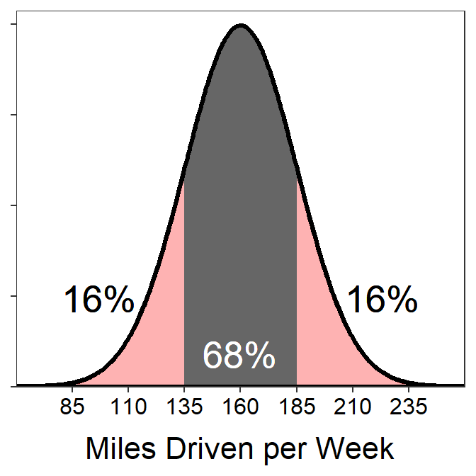

Module 6 Normal Distribution Introduction
A model for the distribution of a single quantitative variable can be visualized by “fitting” a smooth curve to a histogram (Figure 6.1-Left), removing the histogram (Figure 6.1-Center), and using the remaining curve (Figure 6.1-Right) as a model for the distribution of the entire population of individuals. If the smooth curve follows a known distribution, then certain calculations are greatly simplified.

Figure 6.1: Depiction of fitting a smooth curve to a histogram to serve as a model for the distribution.
The normal distribution is one of the most important distributions in statistics because it serves as a model for the distribution of individuals in many natural situations and the distribution of statistics from repeated samplings (i.e., sampling distributions).31 The use of a normal distribution model to make certain calculations is demonstrated in this module. More complex calculations are described in the next module.
6.1 Characteristics of a Normal Distribution
The normal distribution is the familiar bell-shaped curve (Figure 6.1-Right). Normal distributions have two parameters – the population mean, μ, and the population standard deviation, σ – that control the exact shape and position of the distribution. Specifically, the mean μ controls the center and the standard deviation σ controls the dispersion of the distribution (Figure 6.2).

Figure 6.2: Nine normal distributions. Distributions with the same line type have the same value of μ (solid is μ=0, dashed is μ=2, dotted is μ=5). Distributions with the same color have the same value of σ (black is σ=0.5, red is σ=1, and green is σ=2).
There are an infinite number of normal distributions for each of the infinite number of combinations of μ and σ. However, each normal distribution
- is bell-shaped and symmetric,
- is centered at μ,
- has inflection points at μ±σ, and
- has a total area under the curve equal to 1.
If a generic variable X follows a normal distribution with a mean of μ and a standard deviation of σ, then it is said that X~N(μ,σ). For example, if the heights of students (H) follows a normal distribution with a mean of 66 and a standard deviation of 3, then it is said that H~N(66,3). As another example, Z~N(0,1) means that the variable Z follows a normal distribution with a mean of μ=0 and a standard deviation of σ=1.
6.2 Area Under the Curve
A common question in statistics is to determine the proportion of individuals with a value of the variable between two numbers. For example, you might be faced with determining the proportion of all sites that have lead concentrations between 1.2 and 1.5 \(\mu g \cdot m^{-3}\), the proportion of students that scored higher than 700 on the SAT, or the proportion of Least Weasels that are shorter than 150 mm. Before considering these more realistic situations, lets explore calculations for the generic variable X shown in Figure 6.3.
Consider finding the proportion of individuals in a sample with values between 0 and 2. A histogram can be used to answer this question because it is about the individuals in a sample (Figure 6.3-Left). In this case, the proportion of individuals with values between 0 and 2 is computed by dividing the number of individuals in the red shaded bars by the total number of individuals in the histogram. The analogous computation on the superimposed smooth curve is to find the area under the curve between 0 and 2 (Figure 6.3-Right). The area under the curve is a “proportion of the total” because, as stated above, the area under the entire curve is equal to 1.

Figure 6.3: Depiction of finding the proportion of individuals between 0 and 2 on a histogram (Left) and on a standard normal distribution (Right).
The proportion of individuals between two values of a variable that is normally distributed is the area under the normal distribution between those two values. This area is analogous to summing the number of individuals in the appropriate bars of a histogram and dividing by n.
6.3 68-95-99.7 (or Empirical) Rule
The 68-95-99.7 (or Empirical) Rule states that 68% of individuals that follow a normal distribution have values between μ-1σ and μ+1σ, 95% have values between μ-2σ and μ+2σ, and 99.7% have values between μ-3σ and μ+3σ (Figure 6.4).
Figure 6.4: Depiction of the 68-95-99.7 (or Empirical) Rule on a normal distribution.
The 68-95-99.7 Rule is true no matter what μ and σ are as long as the distribution is normal. For example, if A~N(3,1), then 68% of the individuals will fall between 2 (i.e., 3-1×1) and 4 (i.e., 3+1×1) and 99.7% will fall between 0 (i.e., 3-3×1) and 6 (i.e., 3+3×1).
Figure 6.5: Depiction of the 68-95-99.7 (or Empirical) Rule on a A~N(3,1) distribution.
Alternatively, if B~N(9,3), then 68% of the individuals will fall between 6 (i.e., 9-1×3) and 12 (i.e., 9+1×3) and 95% will be between 3 (i.e., 9-2×3) and 15 (i.e., 9+2×3). Similar calculations can be made for any normal distribution.

Figure 6.6: Depiction of the 68-95-99.7 (or Empirical) Rule on a A~N(9,3) distribution.
The 68-95-99.7 Rule is used to find areas under the normal curve as long as the value of interest is an integer number of standard deviations away from the mean. For example, the proportion of individuals that have a value of A greater than 5 (Figure 6.7) is found by first realizing that 95% of the individuals on this distribution fall between 1 and 5 (i.e., ±2σ from μ). By subtraction this means that 5% of the individuals must be less than 1 AND greater than 5. Finally, because normal distributions are symmetric, the same percentage of individuals must be less than 1 as are greater than 5. Thus, half of 5%, or 2.5%, of the individuals have a value of A greater than 5.

Figure 6.7: The N(3,1) distribution depicting how the 68-95-99.7 Rule is used to compute the percentage of individuals with values greater than 5.
The 68-95-99.7 Rule can only be used for questions involving integer standard deviations away from the mean.
6.4 Example Calculations
Suppose, for example, that the total miles driven per week by a particular person is normally distributed with a mean of 160 miles and a standard deviation of 25 miles. The following questions can be answered for this situation using the 68-95-99.7% Rule.
- What percentage of weeks does the driver drive less than 110 miles?
- 2.5% – 110 is exactly 2 standard deviations below the mean (i.e., 160-2×25=110). The area between 2 standard deviations above and below the mean is 95%, so there is 5% outside of those two points. We want only one side of this symmetric distribution, so 5% is split in half to get 2.5%.

- What percentage of weeks does the driver drive less than 185 miles?
- 84% – 185 is exactly 1 standard deviation above the mean (i.e., 160+1×25). The area between 1 standard deviation above and below the mean is 68%, so there is 32% outside of those two points with 16% in each tail. Thus, the area less than 185 is 68%+16%=84%.

- What percentage of weeks does the driver drive between 135 and 210 miles?
- 81.5% – 135 miles is exactly 1 standard deviation below the mean (i.e., 160-1×25=135) and thus has 16% of the area below it. 210 miles is exactly 2 standard deviations above the mean (i.e., 160+2×25=210) and thus has 2.5% of the area above. To get the area between 135 and 210, subtract these combined areas from 100.

The following questions, though they sound different, can also be answered with the 68-95-99.7% Rule.
- What are the miles driven for the highest 16% of miles driven?
- 185 – Hopefully the 16% sounds familiar from above, which relates it to one tail “left over” from 68%. The question is looking for the “highest 16%” so it is the upper tail that starts exactly one standard deviation above the mean (i.e., 160+1×25=185). 
- What are the miles driven for the lowest 2.5% of miles driven?
- 110 – Hopefully the 2.5% sounds familiar from above, which relates it to one tail “left over” from 95%. The question is looking for the “lowest 2.5%” so it is the lower tail that starts exactly two standard deviations below the mean (i.e., 160-2×25=110).
- What are the most common 68% of miles driven?
- Between 135 and 185 – This is simply the first part of the 68-95-99.7% Rule. See the previous plots with 68%.
6.5 Distinguish Calculation Types
It is critical to be able to distinguish between two main types of calculations made from normal distributions. The first type of calculation is when you are given a value of the variable (X) and asked to find a percentage of individuals. These questions are called forward questions. The first three questions in the examples of the previous section are forward calculations because the questions gave you miles driven per week values and asked you to find a percentage of weeks.
The second type of calculation occurs when you are given a percentage and asked to find the value (or values) of the variable related to that percentage. These calculations are called reverse questions simply to contrast them with the previous forward calculations. The last three questions in the examples of the previous section are reverse calculations because the questions gave you a percentage of weeks and asked you to find a miles driven per week value.
Distinguishing between these two types of calculations (Table 6.1) is a matter of deciding if (i) the value of the variable is given and the percentage (or area) is to be found or (ii) if the percentage (or area) is given and the value of the variable is to be found. Therefore, distinguishing between the calculation types is as simple as identifying what is given (or known) and what must be found. If the value of the variable is given but not the percentage then a forward calculation is used. If the percentage is given then a reverse calculation to find the value of the variable is used.
| Question Type | Given (Know) | Asked to Find |
|---|---|---|
| Forward | Value (X) | Percentage (area) |
| Reverse | Percentage (area) | Value (X) |
In addition to categorizing the question as a “Forward” or “Reverse” question, we will also categorize it as a “Left”-of, “Right”-of, or “Between” question based on which way is shaded to mark the area on the normal distribution. So for each question we can categorize as one of six possibilities – Forward-Left, Forward-Right, Forward-Between, Reverse-Left, Reverse-Right, or Reverse-Between.
All of the questions from the previous section are shown below and marked as to what type of question they are.
- What percentage of weeks does the driver drive less than 110 miles?
- Forward-Left (given a value of X, shaded to the left)
- What percentage of weeks does the driver drive less than 185 miles?
- Forward-Left (given a value of X, shaded to the left)
- What percentage of weeks does the driver drive between 135 and 210 miles?
- Forward-Between (given two values of X, shaded between them)
- What are the miles driven for the highest 16% of miles driven?
- Reverse-Right (given a percentage, shaded to the right)
- What are the miles driven for the lowest 2.5% of miles driven?
- Reverse-Left (given a percentage, shaded to the left)
- What are the most common 68% of miles driven?
- Reverse-Between (given a percentage, shaded the middle between two values)